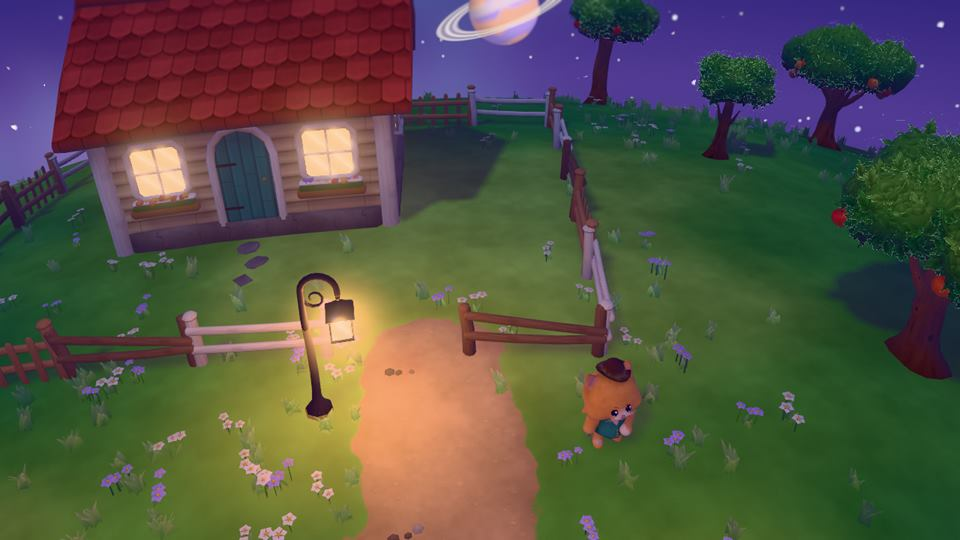
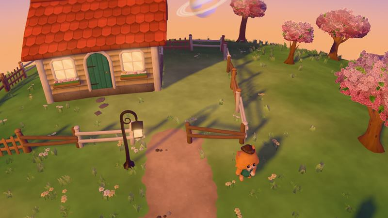
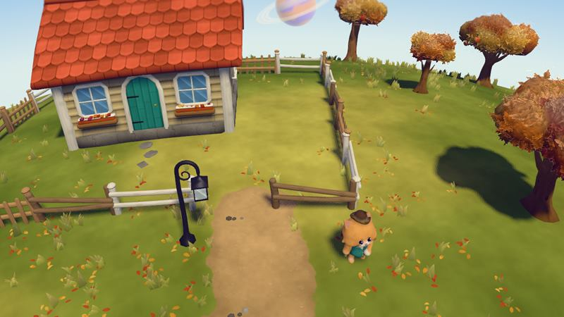
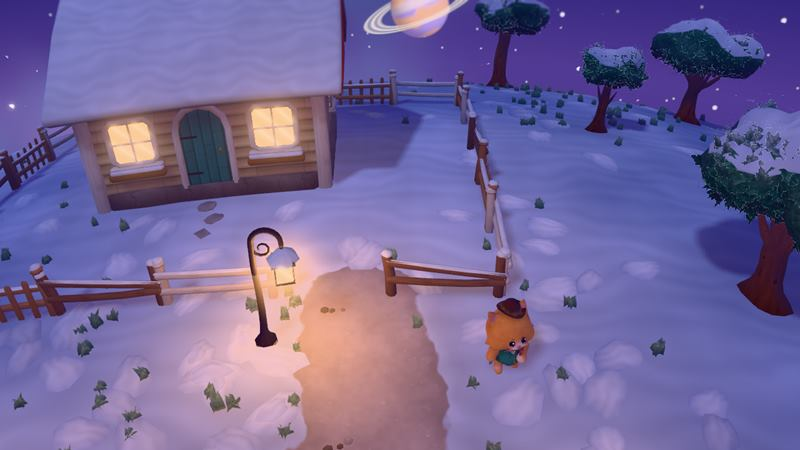
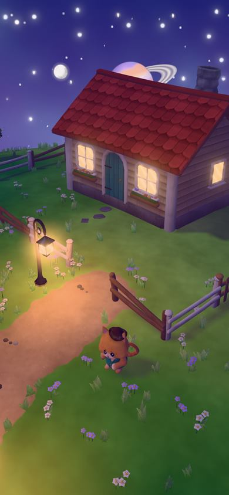
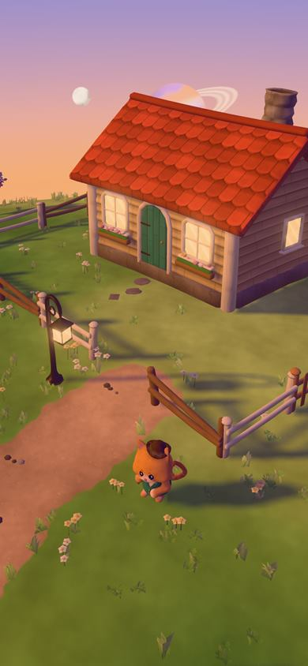

Playable in your browser
Farmy Moon Life: a cozy farming game on a tiny moon
A moon small enough to walk around before your tea goes cold. A cottage with the lights on, an orchard, a jam kettle, some neighbours who could be happier, and a round cat in a waistcoat who, unfortunately, owns all of the land.
Free, no download and no account. It saves your moon in the browser, so you can close the tab and come back to it.

A cozy game about a very small moon
Farmy Moon Life is a cozy life game from Magestican Studios, and it is being built right now. You live on a tiny moon, generated fresh rather than drawn once, and every moon has its own season: a spring moon of pink blossom, a summer moon of long warm evenings, an autumn moon ankle-deep in leaves, a winter moon tucked under snow. It is small enough that the horizon curves away in front of you.
It is designed to be slow on purpose. The goals are gentle ones — a fuller orchard, a better-stocked shop, a neighbour who finally looks pleased to see you — and the pleasure is in watching a bare little moon turn into somewhere you would actually like to live.
Grow an orchard, then turn it into jam
The planned loop is the cute farming game loop at its most satisfying. Trees grow fruit. You harvest the fruit. The harvest goes into a processing building of your own and comes out as juice and jam, which is the correct thing to do with fruit. One small twist we are fond of: felling a tree is not a loss, because a felled tree gives you seeds, and seeds are the next orchard.
Then you sell — not to a faceless market, but from a shop you build yourself, to the neighbours who live on your moon. Your jam, their breakfast table.
The landlord is a cat in a waistcoat
All the land on your moon belongs to one very round, very sweet cat in a waistcoat and a hat. He is not a villain. He simply has parcels, and you would like more of them. Buying land from him is how your moon grows: room for more trees, a bigger shop, a longer lane to line with lamps. He takes the hat extremely seriously. Nobody has asked him why.
Make the neighbours happy, and watch them settle in
The neighbours start out a little unsure about living on a moon. Kindness helps: a gift of money, food, or something rare you found. In the design, a happy neighbour builds their own house. A happier one decorates it. The happiest plant a garden. So you can tell how well you have looked after everybody just by walking down the street.
Light up your moon at night
Day turns to night on every moon, and the night lighting is real rather than painted on. Lamps throw warm pools across the path, windows glow, fire pits flicker. Where the light goes is your choice, so a lit-up cottage at the end of a lit-up lane is something you make, not something the game hands you. It is the part we keep stopping to look at.
What it looks like so far
Every picture on this page is a frame from the game's own engine, captured from its look-development build on 14 September 2026. There is no gameplay in them yet. This is the stage where the moon, the cottage, the trees, the lamps and the cat are made to look right before the game is built around them, so some of it will change — the snow, for one, still needs work.





A cozy browser game, built for your phone
Every Magestican Studios game runs in a browser tab: you open a link and you are playing, with no download, no install and no app store. Farmy Moon Life is planned the same way, and it is being built for phone browsers first — held in one hand, on the sofa, on the bus, in the ten minutes before bed. It will work on a computer too; the phone is simply where it is designed to feel best. When it becomes a relaxing game on your phone that you can actually play, this page will say so.
Friends can visit, and they cannot move your lamps
Visiting is part of the design. A friend can come to your moon, wander about and admire the jam, but they cannot change anything — so the lamp you spent ten minutes placing stays exactly where you put it. Anything they pick up while they are there goes to you. It is a very good arrangement for the host.
For people who love games like Animal Crossing and Stardew Valley
If you have ever lost an evening rearranging an island in Animal Crossing: New Horizons, played one more day of Stardew Valley at midnight, found an odd calm in unboxing a life in Unpacking, or checked on your ghosts in Cozy Grove before bed, you already know the feeling this game is aiming for. It is not a copy of any of them. It has its own ideas: a whole moon rather than an island, an economy that runs from orchard to jam jar to shop counter, and a landlord who is a cat. Call it a cottagecore game in the most literal sense — a cottage, a core that is mostly fruit, and a ringed planet in the sky.
Where it is right now
Honestly: only the graphics exist. The moon, the four seasons, day and night, the cottage, the orchard trees, the lamps and the cat landlord have been built and rendered, and that is what the pictures above show. The orchard you tend, the jam, the shop, the land and the neighbours are designed but not built. There is no release date and no price yet, and we would rather tell you that than make either up.
If you want something gentle to play today, Farmy Crosswords is four word games with no clock and no rush, from the same studio.
Frequently asked
What is Farmy Moon Life?
A cozy life and farming game from Magestican Studios, in development. You live on tiny seasonal moons, and the game is designed around growing an orchard, making juice and jam, selling to your neighbours from a shop you build, and buying land from a cat landlord in a waistcoat.
When can I play it?
Not yet, and there is no date. Only the graphics exist so far: the moon, the seasons, day and night, the cottage, the trees, the lamps and the cat. The game is built around them next, and this page will say so the day there is something to play.
Is it like Animal Crossing?
In spirit, yes: gentle goals, a home to look after, neighbours to make happy, and seasons. It is its own game, with a moon instead of an island, an orchard-to-jam economy and a cat who owns the land. It is not connected to Nintendo or to Animal Crossing.
Does it work on my phone?
That is the plan. It is being built for phone browsers first, and like every Magestican Studios game it is meant to run in a browser tab with nothing to download or install.
Can I play with friends?
Friends visiting your moon is part of the design. A visitor can walk around but cannot change anything, and whatever they pick up goes to you. It is not built yet.